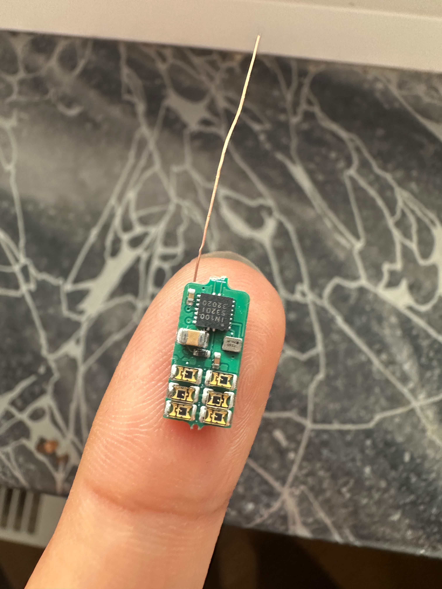
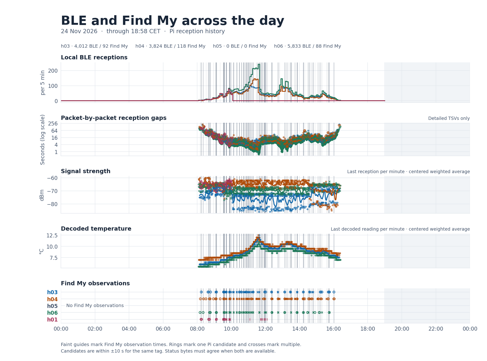

Hagalu-003, -004 and -006 spent the day on solar power on a south-facing balcony. The Pi recorded continuously from midnight through the 18:58 CET report cutoff. It first heard the three tags between 08:04 and 08:08 and last heard them between 16:20 and 16:24.
Find My coverage
004 had the highest short-window Find My coverage. 006 had the fastest local BLE cadence. Each coverage denominator counts same-clock windows in which the Pi heard all three tags. Each numerator counts those windows with at least one stored Find My observation for the indicated tag. Observation times are distinct per tag.
| Tag | Pi receptions | Find My observations | 5 min | 15 min | 30 min |
|---|---|---|---|---|---|
| 003 · S6L, 0 dBm | 4,012 | 92 | 41% (41/100) | 85% (29/34) | 100% (17/17) |
| 004 · S6L, +4 dBm | 3,824 | 118 | 57% (57/100) | 94% (32/34) | 100% (17/17) |
| 006 · S6, 0 dBm | 5,833 | 88 | 40% (40/100) | 85% (29/34) | 94% (16/17) |
All three had their first Find My observation about six minutes after their first Pi reception. The median RSSI was −73 dBm for 003, −65 dBm for 004 and −69 dBm for 006. Median gaps between Pi receptions were 5.49 s, 5.33 s and 3.40 s respectively.
The percentages describe reporting within a time window on this run. Of 298 Find My observations, 84 had one compatible Pi advert within ±10 s, 203 had several and 11 had none. Matching used the same tag and checked the status byte when both sides supplied it. The Find My observation timestamps in this archive land on 10-second boundaries.


Temperature and light
The busiest shared half-hour was 11:10–11:40 CET, with 2,519 Pi receptions. There was another strong hour from 13:00 to 14:00. Receptions rose from 891 in the 14:00 hour to 1,118 in the 15:00 hour while each tag’s hourly median temperature fell by 0.5 °C.
| Tag | Decoded temperature range | Temperature vs. receptions, 5-min Spearman ρ | ρ for changes between adjacent bins |
|---|---|---|---|
| 003 | 6.0–12.5 °C | +0.63 | +0.36 |
| 004 | 7.0–12.5 °C | +0.57 | +0.32 |
| 006 | 5.5–11.5 °C | +0.65 | +0.41 |
Warmer periods generally had more receptions. The relationship was weaker for changes between adjacent bins. The late rebound is compatible with renewed light on the balcony. The run had no lux trace, so reception cadence is an indirect proxy for available light.


Fix quality and other tags
The median reported horizontal accuracy was 102 m for all three tags. The 90th-percentile distance from the pooled median fix was 14.4 m for 003, 14.5 m for 004 and 7.9 m for 006. These distances describe the repeatability of the fix cluster. Absolute error would require a surveyed reference.
005 was silent on both channels. The Pi heard 001 597 times and Find My recorded 50 distinct observation times. The comparison excludes 001 because the Pi’s local trace ended at 10:03 and Find My observations continued until 12:06.
Reproduce the analysis
From the Gantumoote checkout on the Pi, use the day analysis command. It works from the local receiver and Find My archives.
/usr/bin/python3 -m dashboard.ble_analysis 2026-11-24 --tags h01 h03 h04 h05 h06 --compare h03 h04 h06